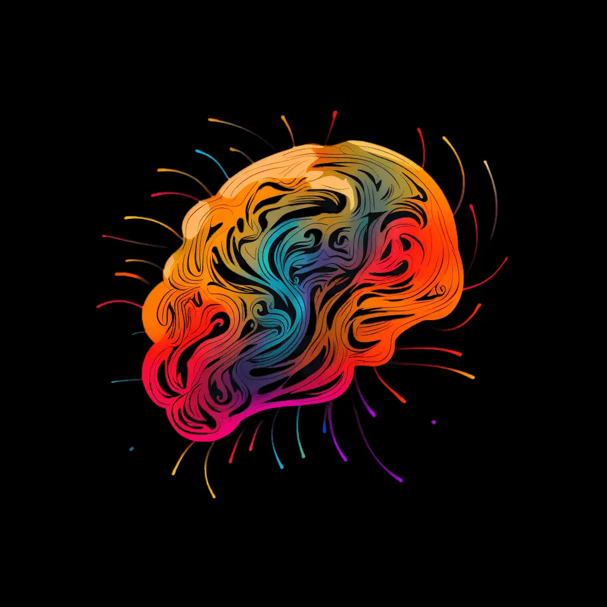

Was du gerade gesehen hast, ist nur ein Ausschnitt.
Die in der Anzeige beschriebenen Veränderungen folgen klaren neurochemischen Mechanismen im Gehirn.
Hier beginnt die vollständige Einordnung:
Neuropsychologische Mechanismen
Alkohol: „Enthemmtes Bewusstsein“
Alkohol verstärkt die Wirkung von GABA (Gamma-Aminobuttersäure), einem hemmenden Botenstoff im zentralen Nervensystem, wodurch die Aktivität der Nervenzellen gedämpft wird.
Die Folge davon ist: Entspannung, sinkende Hemmschwellen und ein lockeres Verhalten.
Hierdurch fühlen sich Menschen sozial offener, spontaner und weniger gehemmt in ihrer Interaktion mit anderen Personen.
Alkohol reduziert die Wirkung von Glutamat, das normalerweise Erregung und Informationsverarbeitung im Gehirn fördert.
Die Folge davon ist: Die bewusste Steuerung des Verhaltens (kognitive Kontrolle) lässt nach, das Denken wird träge und man hinterfragt das eigene Handeln kaum noch kritisch.
Hierdurch reagieren Menschen impulsiver und treffen Entscheidungen oft ohne tiefere Abwägung.
Die vollständige Analyse zeigt die neurochemischen Prozesse aller Substanzen im Detail – und wie sie dein Verhalten systematisch beeinflussen.
Neuropsychologische Analyse
Strukturierte Einordnung der Mechanismen hinter veränderten Bewusstseinszuständen.

· 27 wissenschaftliche Quellen
- · Wirkung auf das Bewusstsein
- · Neuropsychologische Mechanismen
- · Bewusstseinseffekte
- · Wirkung auf das Bewusstsein
- · Neuropsychologische Mechanismen
- · Bewusstseinseffekte
- · Wirkung auf das Bewusstsein
- · Neuropsychologische Mechanismen
- · Bewusstseinseffekte
- · Wirkung auf das Bewusstsein
- · Neuropsychologische Mechanismen
- · Bewusstseinseffekte
- · Wirkung auf das Bewusstsein
- · Neuropsychologische Mechanismen
- · Bewusstseinseffekte